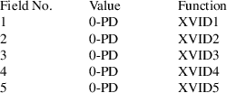
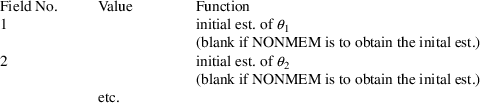
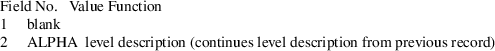
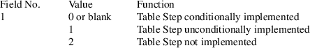

Appendix 4 - NONMEM Control Records (FCON)
The following is a list of NONMEM control records and options. These are generated by NM-TRAN in a file called FCON. They are listed in the order that they appear in FCON.
Records marked with * may
be continued.
The record name, e.g., "INDX", is not repeated on
continuation(s).
Any time a field may contain 0, it may contain blanks
instead, which are read as 0.
Constants SD, PD, LVR are from SIZES. Constants INF, INTBIG,
INTSMALL
indicate the largest floating point number, the largest
integer value,
and smallest integer value, respectively, that can be
represented in the
computer’s architecture.
(In some cases, e.g., BOOTSTRAP option of SIMULATION, it
means an integer of up to 11 digits).
FILE record (FILE) (A4,4X,A72)
SUPER record (SUPR) (A4,4X,I4,I8,I4)
PROBLEM record (PROB) (A4,4X,A72)
FORMAT record (FMTN) (A4,I4)
DATA record (DATA) (A4,4X,8I4,I12,I4)
ITEM record (ITEM) (A4,4X,18I4)

INDEX record (INDX)* (A4,4X,18I4)
XVID record (XVID) (A4,4X,18I4)

MSDT record (MSDT) (A4,4X,20(1PE22.14E3,1X)

LABEL record (LABL)* (A4,X2,A74)
The LABL record contains a comma-delimited list of labels, beginning at position 6, with an unlimited number of continuation records. Each label is right-adjusted in a field of SD characters. By default (i.e., with SD=20 in SIZES), there are 3 labels per line. The order is as follows:
Additional LABEL record (LBW1)* (A4,X2,A74)
The LBW1 record contains a comma-delimited list of labels for the additional diagnostic items, starting at position 6 in each line. The format is similar to that of the LABL record, but leading spaces are omitted. The default labels are as follows:
IWRS,IPRD,IRS
NPRED,NRES,NWRES
NIWRES,NIPRED,NIRES
CPRED,CRES,CWRES
CIWRES,CIPRED,CIRES
PREDI,RESI,WRESI
IWRESI,IPREDI,IRESI
CPREDI,CRESI,CWRESI
CIWRESI,CIPREDI,CIRESI
EPRED,ERES,EWRES
EIWRES,EIPRED,EIRES
NPDE,ECWRES,NPD
OBJI
LABEL record for THETA (LTHT)* (A4,X4,A72)
LABEL record for ETA (LETA)* (A4,X4,A72)
LABEL record for EPS (LEPS)* (A4,X4,A72)
LABEL record for RESIDUAL LABEL (LRES) (A4,X1,A5)
Symbolic names for elements of THETA, ETA, and EPS (respectively), for NONMEM to use in the report file (label substitution). If label substitution is not requested, the LTHT, LETA, and LEPS records are optional and (if present) should have blanks starting in position 9.
Example:
Suppose the NM-TRAN control file contains
ABBR REPLACE THETA(KA,K,CL)=THETA(1 TO 3)ABBR REPLACE ETA(CL)=ETA(3),ETA(V)=ETA(5)
Then the generated LABEL records are:
LTHT 1=THETA(KA),2=THETA(K),3=THETA(CL) LETA 3=ETA(CL),5=ETA(V) LEPS
OMIT record (OMIT)* (A4,4X,18I4)
FORMAT record (FORM) (A4,4X,A72/A80)
FIND record (FIND) (A4,4X,18I4)
MSF Version Record (MSFV) (A4,X4,A72)
Right after the FIND record for MSFI, if it exists, the MSFV (NM74) contains the MSF version, starting at position 9. This will be blank if not specified explicitly. Example:
MSFV 7.2.0 INITIAL VALUES record for ETA (ETA)* (A4,I4,(comma-delimited list)) INITIAL VALUES record for PHI (PHI)* (A4,I4,(comma-delimited list))
With FILE specified:
ADDITIONAL RECORDS (UNLABELED) FOR ETA/PHI (A4,4X,(I12 or A))

With no FILE specified:
Initial STRUCTURE record (STRC) (A4,4X,18I4)
If the dimension of SIGMA is 0, the following fields may be ignored.
STRUCTURE record for OMEGA (STRC)* (A4,4X,18I4) STRUCTURE record for SIGMA (STRC)* (A4,4X,18I4)
RECORDS FOR TTDF,OVARF,SVARF,OLKJDF,SLKJDF) (A4,4X,I12)
THETA CONSTRAINT record (THCN) (A4,4X,18I4)
THETA record (THTA)* (A4,4X,(comma-delimited list))

THETA uninteresting for DESIGN (THTU)* (A4,4X,(comma-delimited list))
LOWER BOUND record (LOWR)* (A4,4X,(comma-delimited list))
UPPER BOUND record (UPPR)* (A4,4X,(comma-delimited list))
DIAGONAL record
(DIAG)* (A4,1X,A1,1X,A1,(comma-delimited list))
for OMEGA or SIGMA
BLOCK SET record (BLST)* (A4,1X,A1,1X,A1,(comma-delimited list)) for OMEGA or SIGMA
DESIGN record (OPTD) (A4,4X,I2,I3,2I2,7I6,I12,I2,E23.16,I6,I3,2I6,I3)
Additional Design Records (DESEL) () (8X,I6,I6,I6,I6)
SIMLUATION record (SIML) (A4,4X,I2,I3,I2,I2,I13,5I2,I13,4(I6),1X,A16)
If the value is 1, the subsequent fields may be ignored.
ADDITIONAL RECORDS FOR SIML (A4,4X,I12,A)
SOURCE record (SORC) (A4,4X,2A12,I4)
DEFAULT record (DFLT) (A4,4X,I4)
INITIAL VALUES record
for RCOV (RCOV)* (A4,4X,(A or I12)
INITIAL VALUES record for RCOVI (RCVI)* (A4,4X,(A or
I12)
ADDITIONAL RECORDS (UNLABELED) FOR RCOV/RCVI (A4,4X,(I12 or A))
CHAIN record (CHN)
ADDITIONAL RECORDS FOR CHAIN (A4,4X,A)
LEVEL record (OLEV)* (A4,X4,A20,A52)
LEVEL rec. contination rec. (OLEV)* (A4,X4,X20,A52)

ANNEAL record (ANNL) (A4,X4,A6,A6)
ESTIMATION record (ESTM) (A4,4X,18I4)
If the value is 1, the subsequent fields may be ignored.
ESTIMATION rec. continuation rec. ( )(A4,4X,18I4)
BAYES ESTIMATION record (BEST)
ADDITIONAL RECORDS FOR ESTIMATION (A4,4X,A)
ZERO record (ZERO)* (A4,4X,18I4)
GRID record (GRID) (A4,4X,9A8)

NONPARAMETRIC record (NONP) (A4,4X,5I4,I12,I12,I6,I6,I2,I12)
ADDITIONAL RECORD FOR NONPARAMETRIC (A4,4X,I12,A)
COVARIANCE record (COVR) (A4,4X,18I4)
Additional COVARIANCE record (COVT) (A4,4X,6I4,I12,I6,I6,I12,I2,4(I6),I2,I2,I2,A10)
Second line of COVT Record (COVT) (8X,I8,I4,I4,6(E12.5),A16)
ADDITIONAL RECORDS FOR COVARIANCE (8X,I12,A)
Initial TABLE record (TABL) (A4,4X,18I4)

If the value is 2, the next field may be ignored,
and there should not appear
any individual TABLE records.
ADDITIONAL RECORDS FOR TABLE (A4,4X,I12,A)
Individual TABLE record (TABL) (A4,1X,3A1,I4,9(I6,I2)
Individual TABLE rec.
contin. rec.
( )*(A4,1X,3A1,I4,9(I6,I2)
(as needed)
Individual TABLE record option rec.( )(A4,4X,5I4,I12,I12,A12,I2,I2,I2,I2,1X,A
Additional TABLE records (A4,4X,A)
Initial SCATTERPLOT record (SCAT) (A4,4X,18I4)
If the value is 2, the
next field may be ignored, and there should not appear
any individual SCATTERPLOT records.
Individual SCATTERPLOT record (SCAT) (A4,4X,9I8/8X,9I8)
If the value of field 3 is 0 or blank, the next two fields should be ignored.
If the value of field 3 is 1, the next field should be ignored.